NCERT Solutions for Class 11 Chemistry Chapter 9 Hydrogen
Topics and Subtopics in NCERT Solutions for Class 11 Chemistry Chapter 9 Hydrogen:
| Section Name | Topic Name |
| 9 | Hydrogen |
| 9.1 | Position of Hydrogen in the Periodic Table |
| 9.2 | Dihydrogen, H2 |
| 9.3 | Preparation of Dihydrogen, H2 |
| 9.4 | Properties of Dihydrogen |
| 9.5 | Hydrides |
| 9.6 | Water |
| 9.7 | Hydrogen Peroxide (H2 O2) |
| 9.8 | Heavy Water,D2O |
| 9.9 | Dihydrogen as a Fuel |
NCERT Solutions Class 11 ChemistryChemistry Lab ManualChemistry Sample Papers
NCERT Class 11 Chemitry Textbook Questions Solved
Question 1. Justify the position of hydrogen in the periodic table on the basis of its electronic configuration.
Answer: Hydrogen has been placed at the top of the alkali metal in group, but it is not a member of the group.
Its position is not justified properly because of its electronic configuration as (1s1). It can be placed with alkali metals because it also has similar configuration (ns1) as alkali metals.
However, it can also be placed along with halogen in group 17 since just like halogen it can acquire inert gas configuration by accepting one electron.
Question 2. Write the names of isotopes of hydrogen. What is the mass ratio of these isotopes?
Answer:
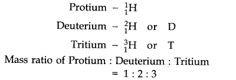
More Resources for CBSE Class 11
- NCERT Solutions
- NCERT Solutions Class 11 Maths
- NCERT Solutions Class 11 Physics
- NCERT Solutions Class 11 Chemistry
- NCERT Solutions Class 11 Biology
- NCERT Solutions Class 11 Hindi
- NCERT Solutions Class 11 English
- NCERT Solutions Class 11 Business Studies
- NCERT Solutions Class 11 Accountancy
- NCERT Solutions Class 11 Psychology
- NCERT Solutions Class 11 Entrepreneurship
- NCERT Solutions Class 11 Indian Economic Development
- NCERT Solutions Class 11 Computer Science
Question 3. Why does hydrogen occur in a diatomic form rather than in a monoatomic form under normal conditions?
Answer: In diatomic form, the K-shell of hydrogen is complete (1s2) and so it is quite stable.
Question 4. How can the production of dihydrogen obtained from ‘Coal gasification’ be increased?
Answer: The production of dihydrogen in coal gasification can be increased by reacting CO(y) present in syngas with steam in the presence of iron chromate catalysts.
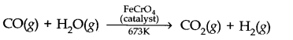
With the removal of C02 the reaction shifts in the forward direction and thus, the production of dihydrogen will be increased.
Question 5. Describe the bulk preparation of dihydrogen by electrolytic method. What is the role of an electrolyte in this process?
Answer: In bulk, hydrogen can be produced by electrolysis of acidified water using Pt electrodes.
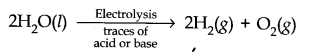
Electrolyte is added to increase the dissociation of water.
Question 6. Complete the following reactions.
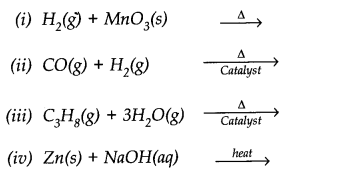
Answer:
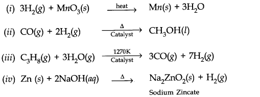
Question 7. Discuss the consequences of high enthalpy of H-H bond, in terms of chemical reactivity of dihydrogen.
Answer: This is due to its small atomic size and also small bond length (74 pm) of H-H bond.
Question 8. What do you understand by (i) Electron-deficient (ii) Electron-precise (iii) Electron-rich compounds of hydrogen? Provide justification with suitable examples.
Answer: (i) Electron deficient hydrides: Compounds in which central atom has incomplete octet, are called electron deficient hydrides. For example, BeH2, BH3 are electron deficient hydrides.
(ii) Electron precise hydrides: Those compounds in which exact number of electrons are present in central atom or the central atom contains complete octet are called precise hydrides e.g., CH4, SiH4, GeH4 etc. are precise hydrides.
(iii) Electron rich hydrides: Those compounds in which central atom has one or more lone pair of excess electrons are called electron rich hydrides, e.g.,NH3, H2O.
Question 9. What characteristics do you expect from an electron-deficient hydride with respect to its structure and chemical reaction?
Answer: It is expected to be a Lewis acid. They are likely to accept electrons to become stable. They can form coordinate bond with electron rich compound.
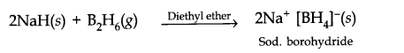
Question 10. Do you expect the carbon hydride of type Cn H2n+2 to act as ‘Lewis’ acid or base? Justify your answer.
Answer: Carbon hydrides of the type Cn H2n+2 are electron precise hydrides. Because they have atom with exact number of electrons to form covalent bonds. Thus, they do not behave as Lewis acid or base. Since they have no tendency to accept or lose electrons.
Question 11. What do you understand by the term ‘non-stoichiometric hydrides’? Do you expect this type of hydrides to be formed by alkali metals? Justify your answer.
Answer: Those hydrides which do not have fix composition are called non-stoichiometric hydrides, and the composition varies with temperature and pressure. This type of hydrides are formed by d and /block elements. They cannot be formed by alkali metals because alkali metal hydrides form ionic hydrides.
Question 12. How do you expect the metallic hydrides to be useful for hydrogen storage? Explain.
Answer: In metallic hydrides, hydrogen is adsorbed as H-atoms. Due to the adsorption of H atoms the metal Lattice expands and become unstable. Thus, when metallic hydride is heated, it decomposes to form hydrogen and finely divided metal. The hydrogen evolved can be used as fuel.
Question 13. How does the atomic hydrogen or oxy-hydrogen torch function for cutting and welding purposes ? Explain.
Answer: When hydrogen is burnt in oxygen the reaction is highly exothermic, it produces very high temperature nearly 4000°C which is used for cutting and welding purposes.
Question 14. Among NH3 H2O and HE, which would you expect to have highest magnitude of hydrogen bonding and why?
Answer: HF is expected to have highest magnitude of hydrogen bonding since, ‘F’ is most electronegative. Therefore, HF is the most polar.
Question 15. Saline hydrides are known to react with water violently producing fire. Can C02, a well known fire extinguisher, be used in this case? Explain.
Answer: No. Because if saline hydrides react with water the reaction will be highly exothermic thus the hydrogen evolved in this case can catch fire. C02 cannot be used as fire extinguisher because C02 will get absorbed in alkali metal hydroxides.
Question 16. Arrange the following:
(i) CaH2, BeH2 and TiH2 in order of increasing electrical conductance.
(ii) LiH, NaH and CsH in order of increasing ionic character.
(iii) H-H, D—D and F—F in order of increasing bond dissociation enthalpy.
(iv) NaH, MgH2 and H2O in order of increasing reducing property.
Answer: (i) BeH2< TiH2 < CaH2
(ii) LiH < NaH < CsH
(iii) F—F < H—H < D—D
(iv) H2O < MgH2 < NaH
Question 17. Compare the structures of H2O and H2O2
Answer: In water, O is sp3 hybridized. Due to stronger lone pair-lone pair repulsions than bond pair-bond pair repulsions, the HOH bond angle decreases from 109.5° to 104.5°. Thus water molecule has a bent structure.
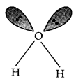
H2O2 has a non-planar structure. The O—H bonds are in different planes. Thus, the structure of H2O2 is like an open book.
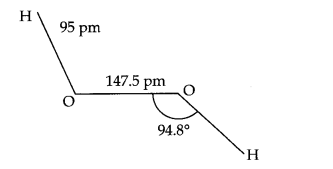
Question 18. What do you understand by the term ‘auto-protolysis’ of water? what is its significance?
Answer: Auto-protolysis means self-ionisation of water. It may be represented as
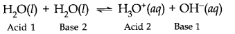
Due to auto-protalysis water is amphoteric in nature, i.e., it can act as an acid as well as base.
Question 19. Consider the reaction of water with F2 and suggest, in terms of oxidation and reduction, which species are oxidised/reduced ?
Answer: 2F2(ag) + 2H20(l)—————> O2(g) + 4H+(aq) + 4F(aq)
In this reaction water acts as a reducing agent and itself gets oxidised to O2 while F2 acts as an oxidising agent and hence itself reduced to F– ions.
Question 20. Complete the following chemical reactions.
(i) PbS(s) + H2O2 (aq) ————->
(ii) MnO4– (aq) + H2O2 (aq) ————->
(iii) CaO(s) + H2O(g) ————->
(iv) AlCl3(g) + H2O(l)————->
(v) Ca3N2(S) + H2O(l) ————->
Classify the above into (a) hydrolysis, (b) redox and (c) hydration reactions.
Answer: (i) PbS(s) +4H2O2(aq) ————-> PbSO4(s) + 4H2O(l)
(ii) 2MnO4– (aq) +H2O2(aq) + 6H+(aq) ————-> 2Mn (aq) + 8H2O(l) + 5O2(g)
(iii) CaO(s) + H2O(g) ————->Ca(OH)2(aq)
(iv) AlCl3(aq) + 3H2O(l) ————-> Al(OH)3(S) + 3HCl (aq)
(v) Ca3N2(s) + H2O(l) ————->3Ca(OH)2(aq) + 2NH3(aq)
(a) Hydrolysis reactions, (iii) (iv) and (v)
(b) Redox reactions (i) and (ii)
Question 21. Describe the structure of common form of ice.

Answer: Ice crystallizes in the normal hexagonal form. However, at very low temperatures it condenses in cubic form. In the normal hexagonal ice each oxygen atom is tetrahedrally surrounded by four other hydrogen atoms.
Question 22. What causes the temporary and permanent hardness of water?
Answer: Temporary hardness of water is due to the presence of bicarbonates of calcium and magnesium in water i.e., Ca(HCO3)2 and Mg(HCO3) in water. Permanent hardness of water is due to the presence of soluble chlorides and sulphates of calcium and magnesium i.e., CaCl2, CaS04, MgCl2 and MgS04.
Question 23. Discuss the principle and method of softening of hard water by synthetic ion-exchange resins.
Answer: Cation exchange resins have large organic molecule with S03H group which are insoluble in water. Ion exchange resin (RS03H) is changed to RNa on treatment with NaCl. The resin exchange Na+ ions with Ca2+ and Mg2+ ions present in hard water and make it soft.
2RNa(s) + M2+(aq) ——> R2M(s) + 2Na+(aq)
where, M = Mg, Ca.
The resins can be regenerated by adding aqueous NaCl solution.
Question 24. Write chemical reaction to show the amphoteric nature of water.
Answer: Water is amphoteric in nature because it acts as an acid
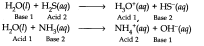
Question 25. Write chemical reactions to justify that hydrogen peroxide can function as an oxidising as well as reducing agent.
Answer: As an oxidising agent
2Fe2+ (aq) + 2H+(aq) +H2O2(aq) ———–> 2Fe3+ (aq) + 2 H2O(l)
As a reducing agent
I2(s) + H2O2 (aq) + 2OH– (aq) ———> 2I– (aq) + 2 H2O(l) + O2(g)
Question 26. What is meant by ‘demineralised water’ and how can it be obtained?
Answer: Demineralised water is free from all soluble mineral salts which is obtained by passing water successively through a cation exchange (in the form of H+) and an anion exchange in the form of OH– resins.
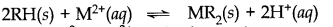
H+ exchanges for Na+, Ca2+, Mg2+ and other cations present in water. This process results in release of proton which makes the water acidic.
OH– exchanges, for anions like Cl–, HCO3–,SO42-etc.
OH– ions thus liberated neutralize the H+ ions set free in the cation exchange process. H+(aq) + OH–(aq) ——-> H2O(l)
Question 27. Is demineralised or distilled water useful for drinking purposes? If not, how can it be made useful ?
Answer: No, demineralised water is not fit for drinking purposes. It can be made useful by adding required amount of ions which are useful for our body.
Question 28. Describe the usefulness of water in biosphere and biological systems.
Answer: (i) Major part of all living system is made of water.
(ii) It constitutes about 65 – 70% of body weights of animals and plants.
(iii) Some properties of water like high specific heat, thermal conductivity, surface tension, high polarity allow water to play a major role in biosphere.
(iv) Because of high heat of vaporisation it is responsible ro regulate temperature of living beings.
(v) It is an excellent fluid for the transportation of minerals and nutrients in plants.
(vi) It is also required for photosynthesis in plants.
Question 29. What properties of water make it useful as a solvent? What types of compound can it (i) dissolve (ii) hydrolyse?
Answer: Water is highly polar in nature thats why it has high dielectric constant and high dipole moment. Because of these properties, water is a universal solvent.
It can hydrolyse many oxides metallic or non-metallic, hydrides, carbides, nitrides etc.
Question 30. Knowing the properties of H2O and D2O, do you think D2O can be used for drinking purpose.
Answer: No, D2O is injurious to human beings, plants and animals.
Question 31. What is the difference between the terms ‘hydrolysis’ and ‘hydration’?
Answer: Hydrolysis is a chemical reaction in which a substance reacts with water under neutral, acidic or alkaline conditions.
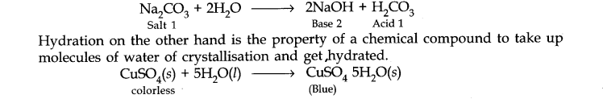
Question 32. How can saline hydrides remove traces of water from organic compounds?
Answer: Saline hydrides (i.e, CaH2 NaH etc.) react with water and form the corresponding metal hydroxide with the liberation of H2 gas. Thus, these hydrides can be used to remove traces of water from the organic compounds.
NaH(s) + H2O(l) ———–> NaOH(aq) + H2(g)
CaH2(s) + 2H2O(l) ———> Ca(OH)2(aq) + H2(g)
Question 33. What do you expect the nature of hydrides is, if formed by elements of atomic numbers 15,19, 23 and 44 with dihydrogen? Compare their behaviour towards water.
Answer: Atomic No. 15 is of phosphorus. The hydride is PH3 and its nature is covalent. Atomic No. (Z = 19) is of potassium. The hydride is KH and it is ionic in nature. Atomic No. (Z = 23) is of vanadium. The hydride is VH. It is interstitial or metallic. Atomic No. 44 is of ruthenium, its hydride is interstitial or metallic.
Question 34. Do you expect different products in solution when aluminium (III) chloride and potassium chloride treated separately with (i) normal water (ii) acidified water (iii) alkaline water? Write equation wherever necessary.
Answer:
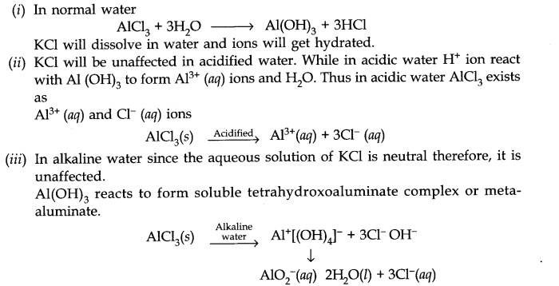
Question 35. How does H2O2 behave as a bleaching agent?
Answer: Bleaching action of H2O2 is due to the oxidation of colouring matter by nascent oxygen.
H2O2(Z) ———> H2O(Z) + O(g)
Question 36. What do you understand by the terms:
(i) Hydrogen economy (ii) hydrogenation (iii) syngas (iv) water-gas shift reaction
(v) fuel-cell?
Answer: (i) Hydrogen economy: The basic principle of hydrogen economy is the storage and transportation of energy in the form of liquid or gaseous dihydrogen.
(ii) Hydrogenation: Hydrogenation means addition of hydrogen across double and triple bonds in presence of catalyst to form saturated compounds.
(iii) Syngas: The mixture of CO and H2 are called synthesis or syngas. It can be produced by the reaction of steam on hydrocarbon or coke at high temperature in the presence of nickel catalyst
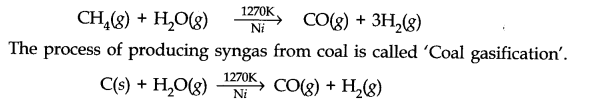
(iv) Water-gas shift reaction: The amount of hydrogen in the syngas can be increased by the action of CO of syngas mixture with steam in the presence of iron chromate as catalyst.This is called water-gas shift reaction.
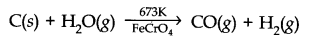
(v) Fuel-Cell: It is a cell which converts chemical energy of fuel directly into electrical energy.
MORE QUESTIONS SOLVED
NCERT Solutions for Class 11 Chemistry Chapter 9 Very Short Answer Type Questions
Question 1. Which isotope of hydrogen is radioactive?
Answer: Tritium.
Question 2. What is the importance of heavy water with regard to nuclear power generation ?
Answer: It is used as a moderator and helps to control the nuclear reaction.
Question 3. What is zeolite?
Answer: It is hydrated sodium aluminium silicate, Na2Al2Si2O8.xH2O.
Question 4. What is water gas? How is it prepared?
Answer: Mixture of CO and H2 in the ratio of 1 : 1 is called water gas.
It is prepared by passing steam over red hot coke.
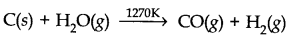
Question 5. Write two uses of interstitial hydrides.
Answer: (i) In the storage of H2.
(ii) Catalyst for hydrogenation reaction.
Question 6. Give an example of an ionic hydride and a covalent hydride:
Answer: NaH is an ionic hydride and B2H6 is a covalent hydride.
Question 7. Give two advantages of using hydrogen over gasoline as a fuel.
Answer:
- High heat of combustion
- It is pollution free.
Question 8. What type of elements form interstitial hydrides?
Answer: d-block and f-block elements.
Question 9. What is perhydrol?
Answer: Perhydrol is the trade name of H2O2. It is used as an antiseptic.
Question 10. What is meant by hard water?
Answer: Water which does not produce lathers with soap is known as hard water. Hardness is due to the presence of bicarbonates, sulphates and chlorides of Ca2+ and Mg2+ .
Question 11. Which gas is evolved when Mg3N2 (Magnesium nitride) is treated with H2O? Give chemical reaction.
Answer: NH3 gas is evolved.
Mg3N2 + 6H2O ———–> 3Mg(OH)2 + 2NH3
Question 12. Which compounds cause temporary hardness of water?
Answer: Ca(HCO3)2 and Mg (HCO3)2
Question 13. Which isotope of hydrogen does not have neutron ?
Answer: 11H does not have neutron. It is called protium.
Question 14. Name a substance which can oxidise H2O2
Answer: Acidified KMnO4.
Question 15. Which type of hydrides are generally non-stoichiometric in nature?
Answer: Interstitial hydrides are non-stoichiometric in nature.
Question 16. What is the cause of bleaching action of H2O2?
Answer: H2O2(l) ———-> H2O(l) + O(g)
Nascent oxygen produced is responsible for bleaching action.
Question 17. What is the use of hydrogen in the manufacture of Vanaspati Ghee?
Answer: H2 is used as reducing agent to convert vegetable oil into vegetable ghee.
Question 18. Name the phenomenon of adsorption of hydrogen on metal surface.
Answer: Occlusion.
NCERT Solutions for Class 11 Chemistry Chapter 9 Short Answer Type Questions
Question 1. Show how H2O2 junctions both as a reducing and as an oxidising agent.
Answer: As oxidising agent.
2I– + H2O2 + 2H+ ———> I2 + 2H2O
As reducing agent.
H2O2 + Ag2O ———-> 2Ag + H2O+ O2
Question 2. What are interstitial hydrides? Give two examples.
Answer: Many transition and inner-transition metals absorb hydrogen into the interstices of their lattices to yield metal like hydrides also called the interstitial hydrides. These hydrides are generally non stoichiometric and their composition vary with temperature and pressure.
For example,TiH1.73, CeH2.7
Question 3. The aqueous solution of H2O2 is acidic in nature. Explain with the help of example. Name two substances which catalyse the decomposition reaction of H2O2.
Answer: The aqueous solution of H2O2 is weakly acidic in nature.
It gives two types of salts with alkalies, peroxides and hydroperoxides.
2Na0H + H2O2 ———> Na2O2 + 2H2O
Na0H + H2O2 ———–> NaHO2 + H2O
MnO2 and finely divided metals like Pt and Fe catalyse the decomposition of H2O2.
Question 4. Complete the following reactions:
(i)SiCl4 + LiAlH4 ————->
(ii)Mg3N2 + H2O ————->
(iii)NaH + CO —————–>
Answer: (i) SiCl4 + LiAlH4 ———-> SiH4 + LiCl + AlCl3
(ii) Mg3N2+ 6H2O ————–>3Mg(OH)2+ 2NH3
(iii) NaH + 2CO ————-> HCOONa + C
Question 5. Explain the following:
(i) Temporary hardness can remove by boiling
(ii) Soft water lathers with soap but hard water not.
Answer: (i) On boiling, the bicarbonates of calcium and magnesium decompose to insoluble carbonate which can be removed by filteration.
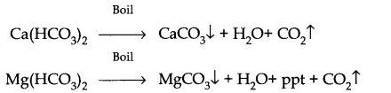
(ii) Because of the presence of Ca2+ and Mg2+ ions in hard water which exchange with Na+ ions of the soap to form corresponding calcium and magnesium salts that form insoluble ppt.
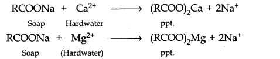
Question 6.(a) How is dihydrogen prepared from water by using a reducing agent?
(b) Give the industrial use of dihydrogen which depends upon heat liberated when it bums.
Answer: (a) Dihydrogen is prepared from water by the action of alkali metals like Na and K which is a strong reducing agent.
2Na + 2H2O ———-> 2NaOH + H2
2K + 2H2O ———> 2KOH + H2
(b)For welding purposes.
H2(g) + 1\2 O2(E) ————> H2O (g) + heat
Question 7. Water molecule is bent, not linear. Explain?
Answer: In water molecule, O is SP3 hybridized. Due to stronger lone pair-lone pair repulsion than bond pair-bond pair repulsions, the HOH bond angle decreases from 109.5° to 104.5°. Thus water is bent molecule.
Question 8. Account for the following:
(i) dihydrogen gas is not preferred in balloons.
(ii) Cone. H2S04 cannot be used for drying H2.
Answer: (i) Dihydrogen is the lighest gas but due to its highly combustible nature it is not preferred in balloons.
(ii) Cone. H2S04 on absorbing H2O forms moist H2 produces so much heat that hydrogen catches fires.
Question 9. Calculate the volume strength of a 3% solution of H2O2
Answer: 100 ml of H2O2 solution contain H2O2 = 3g.
.’. 1000 ml of H2O2 solution will contain = 3/100x 1000 = 30g
Question 10. Complete the following reactions:
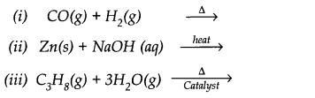
Answer:
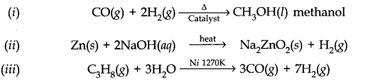
NCERT Solutions for Class 11 Chemistry Chapter 9 Multiple Choice Questions
Question 1. Hydrogen gas is generally prepared by the
(a) reaction of granulated zinc with dilute H2S04
(b) reaction of zinc with cone. H2S04
(c) reaction of pure zinc with dil.H2S04
(d) action of steam on red hot coke.
Question 2. Hydrogen peroxide is used as
(a) an oxidizing agent
(b) a reducing agent
(c) a bleaching agent
(d) all of the above
Question 3. Water may be softened using
(a)sodium aluminium silicate
(b) Graham’s salt
(c) an ion exchange resin
(d) trisodium phosphate
(e)all of the above
Question 4. On treatment of hard water with zeolite, sodium ions get exchanged with
(a) Ca2+ ions
(b) Mg2+ ions
(c) H+ ions
(d) OH–
Question 5. Calgon, which is used as a water softener, has the formula
(a) Na4 [Na2(PO3)6] (b) Na2 [Na4 (PO3)6]
(c) Na2 [Na4 (PO4)5] (d) Na2 [Na2 (PO4)6]
Question 6. The higher density of water than that of ice is due to
(a) dipole-dipole interaction (b) dipole-induced dipole interaction
(c) hydrogen bonding (d) all of these
Question 7. Hydrogen is obtained as a by-product in the
(a) electrolysis of water (b) manufacture of caustic soda
(c) Bosch process (d) Lane process
Question 8. Zeolite is
(a) hydrated sodium aluminium silicate – Na2Al2Si2O8.xH2O
(b) hydrated ferric oxide
(c) sodium hexametaphosphate
(d) sodium tetraborate
Question 9. Water undergoes self-ionization to a small extent to give
(a) H+ and OH–(b) OH+and H–
(c) H3O+ and OH– (d) none of the above
Question 10. The decomposition of H2O2 is retarded by
(a) acetanilide (b) glycerol
(c) sodium bicarbonate (d) oxalic acid
Answer: 1. (a) 2. (d) 3. (e) 4. (a) and (b) 5. (b)
6. (c) 7. (b) 8. (a) 9. (c) 10. (a) and (b)
NCERT Solutions for Class 11 Chemistry Chapter 9 HOTS Questions
Question 1. Account for the following:
(a) Can phosphorus with electronic configuration 3s2 3p3 form PH5?
(b) Water is responsible for moderation of body temperature. How?
(c) Hard water is not suitable for boilers as well as for laundary.
Answer: (a) High ∆aH value of dihydrogen and less negative value of ∆eg H of hydrogen do not favour to exhibit highest oxidation state of P and consequently the formation of PH5, although P exhibit +3, +5 oxidation states.
(b) Because of high heat of vapourisation and high heat capacity.
(c) Hard water form precipitate with soap and deposition of salts in the form of scales.
Question 2. Can we use concentrated sulphuric acid and pure zinc in the preparation of dihydrogen?Write the chemical reactions to show the amphoteric nature of water. Why is hydrogen peroxide stored in wax-lined plastic coloured bottles ?
Answer: (a) Cone. H2S04 cannot be used because it acts as an oxidizing agent also and gets reduced to SO2.
Zn + 2H2S04 (Cone.) ———> ZnS04+ 2H2O + SO2
Pure Zn is not used because it is non-porous and reaction will be slow. The impurities in Zn help in constitute of electrochemical couple and speed up reaction.
(b) Water is amphoteric in nature and it behaves both as an acid as well as base. With acids stronger than itself (e.g., H2S) it behaves as a base and with bases stronger than itself (e.g., NH3) it acts as an acid.
(i) As a base: H2O(I) + H2S(aq) ——-> H3O(aq) + HS–(aq)
(ii) As an acid: H2O(I) + NH3(aq) ———> OH–(aq) + NH4+(aq)
(c) The decomposition of H2O2 occurs readily in the presence of rough surface (acting as catalyst). It is also decomposed by exposure of light. Therefore, waxlined smooth surface and coloured bottles retard the decomposition of H2O2.